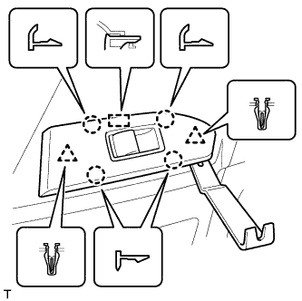
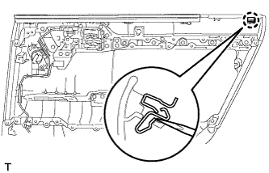
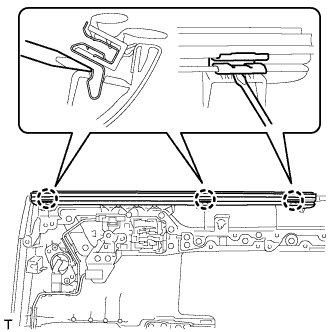
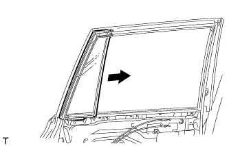
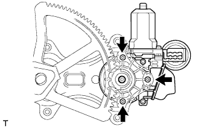

POWER WINDOW REGULATOR MOTOR (for Rear Door) > REMOVAL |
| 1. DISCONNECT CABLE FROM NEGATIVE BATTERY TERMINAL |
| Condition | Waiting Time |
| Vehicle enrolled in G-BOOK system | 6 minutes |
| Vehicle not enrolled in G-BOOK system | 1 minute |
| 2. REMOVE REAR DOOR INSIDE HANDLE BEZEL PLUG LH |
 |
Using moulding remover A, detach the 3 claws and remove the rear door inside handle bezel plug as shown in the illustration.
| 3. REMOVE REAR ARMREST ASSEMBLY LH |
 |
Using moulding remover B, detach the 7 claws and 7 guides and remove the rear armrest assembly as shown in the illustration.
| 4. REMOVE REAR POWER WINDOW REGULATOR SWITCH ASSEMBLY WITH REAR DOOR ARMREST BASE PANEL |
|  |
Using a moulding remover B, detach the 2 clips, 4 claws and guide as shown in the illustration.
Disconnect the connector and remove the rear power window regulator switch assembly with rear door armrest base panel.
| 5. REMOVE REAR DOOR TRIM BOARD SUB-ASSEMBLY LH |
 |
Remove the 2 screws.
Using a clip remover, detach the 9 clips.
 |
Pull out the rear door trim board sub-assembly in the direction indicated by the arrow in the illustration.
Raise the rear door trim board sub-assembly to detach the 4 claws and remove the rear door trim board sub-assembly together with the rear door inner glass weatherstrip.
 |
Disconnect the rear door lock remote control cable assembly and rear door inside locking cable assembly as shown in the illustration.
Disconnect each connector.
|  |
Using a screwdriver, detach the claw and remove the clamp.
| 6. REMOVE REAR DOOR INNER GLASS WEATHERSTRIP LH |
|  |
Using a screwdriver, detach the 3 claws and remove the rear door inner glass weatherstrip from the rear door trim board sub-assembly as shown in the illustration.
| 7. REMOVE REAR SPEAKER ASSEMBLY |
 |
Disconnect the connector.
Remove the 3 screws.
Detach the 2 claws and remove the rear speaker.
| 8. REMOVE REAR DOOR SERVICE HOLE COVER LH |
 |
Disconnect the connector.
Detach the 3 clamps, move the wire harness out of the way and remove the service hole cover.
| 9. REMOVE REAR DOOR GLASS RUN LH |
 |
Remove the rear door glass run.
| 10. REMOVE REAR DOOR WINDOW DIVISION BAR SUB-ASSEMBLY LH |
 |
Loosen the temporary bolt.
| *1 | Temporary Bolt |
Remove the 2 bolts and screw.
Remove the rear door window division bar sub-assembly.
Remove the temporary bolt from the rear door window division bar sub-assembly.
| 11. REMOVE REAR DOOR QUARTER WINDOW GLASS LH |
|  |
Remove the rear door quarter window glass and rear door quarter window weatherstrip as a unit as shown in the illustration.
| 12. REMOVE REAR DOOR GLASS SUB-ASSEMBLY LH |
Connect the cable to the negative (-) battery terminal and rear power window regulator motor connector.
Connect the power window regulator switch assembly and move the rear door glass sub-assembly so that the door glass bolts can be seen.
Disconnect the power window regulator switch assembly and rear power window regulator motor connectors.
Disconnect the cable from the negative (-) battery terminal.
| Condition | Waiting Time |
| Vehicle enrolled in G-BOOK system | 6 minutes |
| Vehicle not enrolled in G-BOOK system | 1 minute |
 |
Remove the rear door glass sub-assembly from the rear door window regulator sub-assembly as shown in the illustration.
 |
Remove the rear door glass sub-assembly as indicated by the arrows in the order shown in the illustration.
| 13. REMOVE REAR DOOR WINDOW REGULATOR SUB-ASSEMBLY LH |
 |
Loosen the temporary bolt.
| *1 | Temporary Bolt |
Remove the 3 bolts.
Remove the rear door window regulator assembly.
Remove the temporary bolt from the rear door window regulator assembly.
| 14. REMOVE POWER WINDOW REGULATOR MOTOR ASSEMBLY LH |
|  |
Using a T25 "TORX" socket wrench, remove the 3 screws and power window regulator motor.